The image
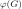
of a homomorphism is
a subgroup of
is
a subgroup of  , and the preimage of a subgroup of is a
subgroup of
, and the preimage of a subgroup of is a
subgroup of  , normal if the subgroup is.
, normal if the subgroup is.
The image contains
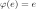
and satisfies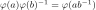
, so the subgroup criterion applies. For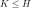
, the preimage contains and
and
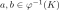
gives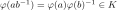
. If is
normal in and
is
normal in and 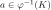
,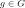
, then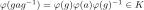
.
Let be a homomorphism. Then
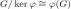
, the isomorphism being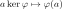
.Put
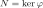
, normal by the earlier proposition, so is a group. The cosets of
is a group. The cosets of  are exactly the fibres of
are exactly the fibres of  :
:
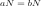
iff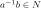
iff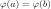
. Hence is constant on cosets and the induced map
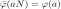
is well defined and injective, by the canonical factorisation; it is surjective onto by construction. It is a homomorphism because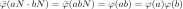
.
Let  and
and  . Then
. Then
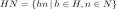
is a subgroup of, 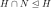
, and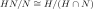
.
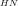
is a subgroup: for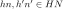
,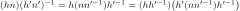
, and the second factor lies in by normality. Also 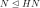
, since is normal in all of .
Let
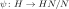
be the restriction to of the
projection 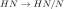
. It is a homomorphism; it is surjective because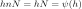
; and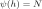
means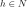
, so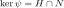
, which is therefore normal in. The
first isomorphism theorem gives .
Let and with
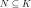
. Then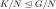
and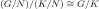
.Define
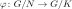
by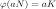
. It is well defined: gives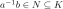
, hence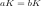
. It is a surjective homomorphism, directly from the definitions of the two products. Its kernel is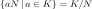
, which is therefore a normal subgroup of, and the first isomorphism theorem gives the claim.
The third theorem is the statement that quotienting twice is quotienting once, so a tower of normal subgroups can be analysed one step at a time – the hypothesis under which "build a group out of simpler pieces" is a well-posed programme, and the reason simple groups (those with no proper non-trivial normal subgroup) are the atoms of it.